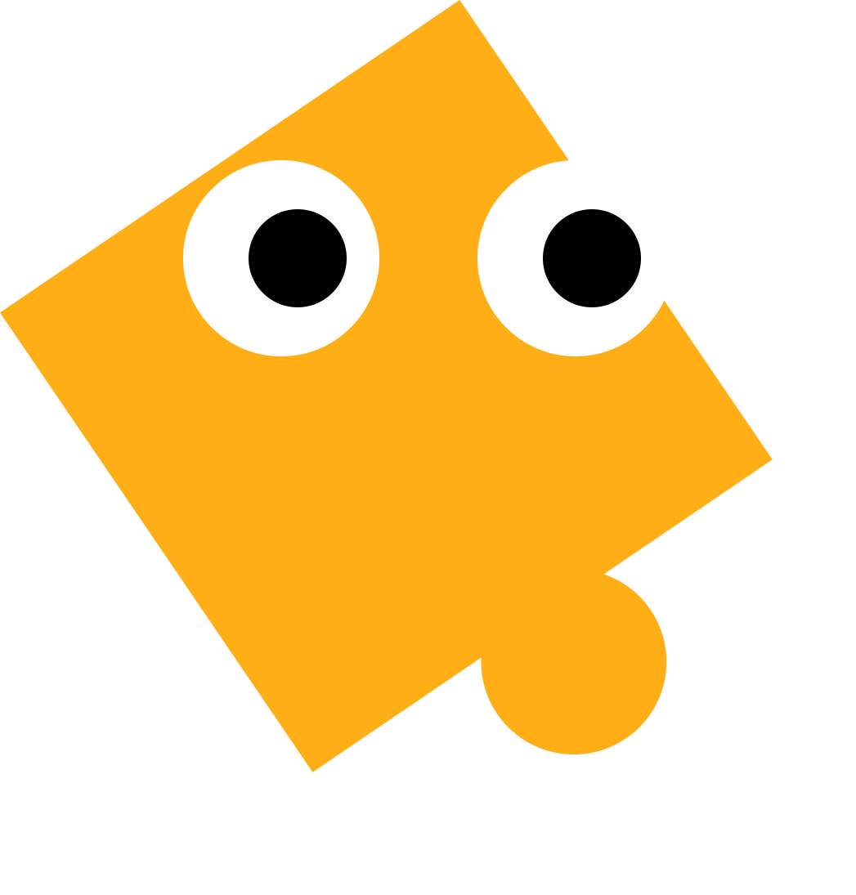

- 1
- 2
- 3
- 4
- 5
- 6
- 7
- 8
- 9
- 10
- 11
- 12
- 13
- 14
- 15
/* 그라디언트 효과를 위에서 아래로, 위에는 skyblue, 아래는 white로 색상을 지정해줘 */
/* background 또는 background-image 속성을 통해 그라디언트를 사용할 수 있어
예를 들면 background: linear-gradient(black, white) 처럼,
참고로 기본적으로 위에서 아래로 그라디언트 효과가 적용돼! */
예를 들면 background: linear-gradient(black, white) 처럼,
참고로 기본적으로 위에서 아래로 그라디언트 효과가 적용돼! */
.background {
}
완료